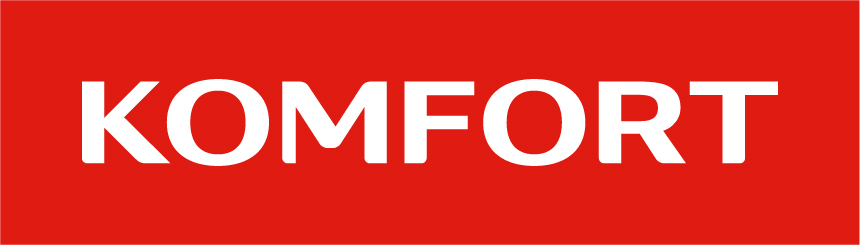

Sklep meblowy Komfort
 Spółka Sklepy Komfort w obecnej formie prawnej została założona w 2006 roku, początkowo z siedzibą w Szczecinie[1]. W kwietniu 2007 r. sieć przeszła na własność funduszu Polish Enterprise Fund VI zarządzanego przez Enterprise Investors, zaś w sierpniu 2007 roku przejęła od duńskiego koncernu Taeppeland Holding sieć sklepów Topwert Świat Dywanów Sp. z o.o.[ Jedynym akcjonariuszem od 2007 roku był Polish Beta Group S.a.r.l. W 2008 roku Komfort otworzył nowe biuro w Łodzi, dokąd przeniósł centralę operacyjną, aby skuteczniej zarządzać siecią sklepów. W 2010 roku do Łodzi została formalnie przeniesiona siedziba spółki. W Strykowie pod Łodzią ulokowany jest należący do spółki największy i najnowocześniejszy magazyn dystrybucyjny wykładzin zrolowanych w Europie Środkowej. Także w 2008 roku Komfort zaczął rozwijać sieć poprzez franczyzę. Sklepy franczyzowe otwierane były w miastach 25–70 tys. mieszkańców; obecnie jest ich około 20, plus 80 punktów partnerskich. W marcu 2009 otwarto w czeskim Ołomuńcu pierwszy zagraniczny sklep sieci Komfort. W maju 2009 roku spółka rozpoczęła proces poszerzania swojej oferty o kolejne branże wyposażenia wnętrz – tkaniny dekoracyjne, drzwi oraz schody. W lipcu 2009 roku ukazał się pierwszy numer magazynu „Twój Komfort”, poświęconego aranżacji wnętrz. Pod koniec 2013 roku sieć została kupiona przez podmioty należące do Michała Sołowowa. Od 2014 roku 100% akcji posiadał kontrolowany przez niego Barcocapital Investment Ltd, a od 2019 roku: luksemburski fundusz inwestycyjny Michała Sołowowa Black Forest SICAV-SIF SA